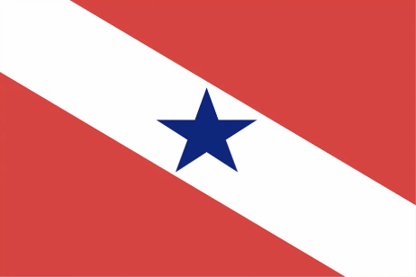

Brincadeiras populares
Brincadeiras populares
Conheça brincadeiras populares de três estados do norte:
Estado
Capital
Brincadeiras populares
Bandeiras
Mais informações
Tocantis
Palmas
pique-esconde,queimada, e cabra-cega
Saiba mais sobre brincadeiras populares do Tocantis
Amazonas
Manaus
jogos da onça,tucuxi e pirarucu
Saiba mais sobre brincadeiras populares do Amazonas
Pará
Belém
cabo-de-guerra, peteca e esconde-esconde

Saiba mais sobre brincadeiras populares do Pará
Comidas Típicas da Região Sul
Curiosidades sobre as brincadeiras da região norte:
Saiba mais
]
©️ 2025 | Desenvolvido por Vitoria Oliveira